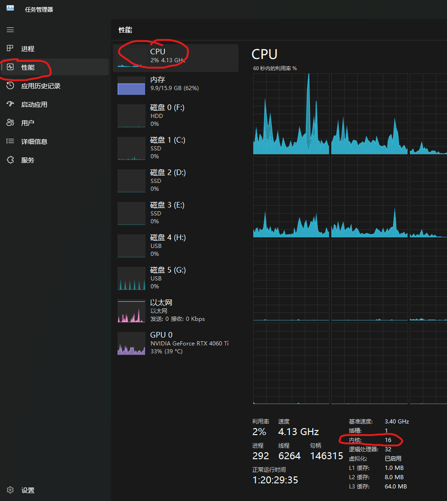
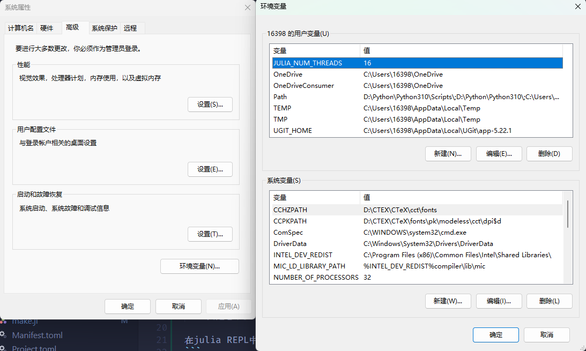
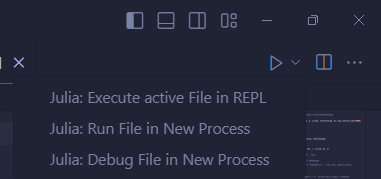

Home
这个Julia包是我研究双高频系统过程中，用到的函数库。
Julia的使用
Julia快速入门
julia语法的入门可以到下面的网址去挑选你熟悉的语言比较它们的显著差异。
Julia多线程支持
安装完Julia之后，在任务管理器中，点击“性能”-“CPU”，在右下角找到“内核”。如下图，内核数为16。  然后Windows系统可以搜索“编辑系统环境变量”，在“环境变量”中添加变量，变量名：JULIA_NUM_THREADS，变量值为电脑内核数。  对于Linux工作站，需要自己用代码查看其内核数，然后在.bashrc中使用export JULIA_NUM_THREADS=48添加环境变量。
有测试表明，如果超过电脑内核数，计算速度反而会降低。因此，即使你电脑线程数更多，此设置也不要超过内核数。
Julia编辑器的选择
我推荐几种编辑方式。
比较小的项目，或者实验性程序，可以用Jupyter Notebook。这样可以边写代码，边记笔记。且VS Code可以远程打开工作站的Jupyter Notebook，非常方便。
写大型项目，推荐原生VS Code或者国内改版的VS Code——Syslab。
你如果电脑有VS Code且懒得装新编辑器，需要自己下载Julia编译器，然后安装VS Code Julia插件。并且在右上角“运行”图标右侧选择“Excecute active in REPL”。这会使得你当前打开的代码文件在REPL中运行——意味着函数、变量全部写入了REPL内存中，你可以在REPL内打印变量、导入绘图包观察函数关系。

你也可以选择同元软控的个人版或教育版Syslab。 它基于VS Code的开源代码，扩展了其功能，具有方便的绘图界面。可以像MATLAB那样，通过点击选择变量，然后有多种绘图方式提供选择。而且，由于是用VS Code改的，你可以使用VS Code的各种插件，比如CodeGeeX等等。 注意，Syslab内嵌Julia程序，你无需额外下载。
如果你有教育邮箱，可以使用教育版，功能更全些。他们拿Julia官方开源代码拿来做了优化——比如Plots被他们改成了TyPlots，画的图更像MATLAB了。
如果你没有教育邮箱，个人版Syslab也能用，只是会阉割掉部分同元做优化的库。我不是太喜欢。但是你仍然可以用] add 包名安装Julia官方的库。
DoubleRF包的使用
包依赖项的安装
一般注册过的包安装时，都可以用] add DoubleRFs来安装。同时依赖的包，比如FFTW,Interpolations,IntervalArithmetic等都会自动安装到本地来。
然而我这种本地的包，暂时不知道怎么弄。首次在本机运行的话，暂时就通过手动添加的方式安装依赖项吧。以后要是想维护、拓展本包，这都是必要的。
在julia REPL中，按下]进入包管理模式。然后输入：
add FFTW # 傅里叶变换相关
add Interpolations # 插值相关
add IntervalArithmetic # 区间算术
add IntervalRootFinding # 基于区间算术的找根包，即使怀疑有根，也会告诉你
add QuadGK # 函数积分包
add LoopVectorization # 向量化相关，增加计算速度
add CurveFit # 曲线拟合包本地包的导入
使用时需要先将DoubleRFs包的路径——或者DoubleRFs的父级目录——添加到julia的搜索路径中。
push!(LOAD_PATH, "E:/Documents/JuliaProgram/MyModules/")这样就成功地将本地包路径添加到了julia搜索路径。这样可以在代码中import或者using调用包名。
如果你存在多个设备，比如“办公室电脑”、“个人PC”、“Linux工作站”，那么可以用下面的方式添加目录：
try
global computername = ENV["COMPUTERNAME"] # 获取Windows电脑名称
catch
global computername = ENV["HOSTNAME"] # 获取Linux工作站名称
end
if computername == "办公室电脑" # 如果电脑名称为"办公室电脑"
push!(LOAD_PATH, "E:/Documents/JuliaProgram/MyModules/")
elseif computername=="localhost.localdomain" # 如果工作站名称为"localhost.localdomain"
push!(LOAD_PATH, "/home/xujingye/Julia/MyModules")
end你可以添加为VSCode或者Syslab的代码片段，下次能便捷输入。
调用相关函数
调用的方式有两种：using和import。
(1)如果你使用：
using DoubleRFs来使用这个包了，那么所有在src/DoubleRFs.jl中通过export导出的函数，都可以直接调用；没有export的，也可以用DoubleRFs.函数名()调用。
(2)如果你使用：
import DoubleRFs:one_turn_map那么只能调用one_turn_map这个函数。
(3)或者你用：
import DoubleRFs这样你可以用DoubleRFs.one_turn_map来调用函数。
import的好处是，只导入使用的函数，不怕命名冲突；而using会导入全部export的函数，可能会产生冲突。
导入包或函数之后，具体的使用案例，参见“示例”一节：
文件结构
如果你想扩展自己的双高频函数包，你需要了解这里的文件结构。
所有的函数都放在/src/文件夹中。其中DoubleRFs.jl与包名同名，这个文件很重要：向外提供了对接接口；向内管理着所有的函数。
DoubleRFs
├── README.md
├── Manifest.toml
├── Project.toml
├── src # 源代码
│ ├── SimulationTools
│ │ ├── ST_MappingEquation.jl # 单圈映射方程，用来进行粒子多圈迭代
│ │ │ # 也可以保留历史坐标记录分析纵向振荡频率
│ │ └── ST_SynchroTuneSpread.jl # 分析纵向振荡频率分布
│ ├── GeneralTools
│ │ ├── GT_CurveFit.jl
│ │ ├── GT_Int.jl
│ │ ├── GT_MatrixDerivative.jl
│ │ ├── GT_Pad.jl
│ │ ├── GT_Random.jl
│ │ ├── GT_RemoveDataList.jl # 早期测试阶段，我计算出来的角变量
│ │ │ # 由于精度问题，在某些位置总是波动很大
│ │ │ # 甚至超出(0, 2pi)范围，因此我利用
│ │ │ # 这个，移除过近的点、超出范围的点
│ │ │ # 不过后来不怎么用了，我们的库里实际没用过
│ │ ├── GT_Sample.jl # 分为两个部分：1. 根据密度分布函数进行
│ │ │ # 采样，这样一大群粒子在此坐标上的分布就
│ │ │ # 满足此函数；2. 径向密度分布的积分接近1.
│ │ │ # 我琢磨着除了目前的采样方式，是否存在适应
│ │ │ # 性采样能够让计算更少。于是参考了自适应
│ │ │ # Simpson法——对于梯形积分规则，斜率均匀
│ │ │ # 的地方采样少，斜率变化大的地方采样密集。
│ │ │ # 但是，密度分布斜率均匀就代表纵向工作点
│ │ │ # 分布斜率均匀吗？未必。所以实际上弃用。
│ │ ├── GT_Sum.jl # 偶然发现的精确求和法，电脑用二进制计算
│ │ │ # 却要显示为十进制，所以有时会将比如2显示
│ │ │ # 为1.9999999...。此求和法一定程度上能
│ │ │ # 解决这个问题。不过我怕影响性能，没用。
│ │ └── GT_ZeroPoint.jl
│ ├── DataAnalysis
│ │ ├── DA_GrowthRate.jl
│ │ └── DA_RMS.jl
│ ├── ActionAngleVlasovSolver
│ │ ├── Sample
│ │ │ ├── AngleVariable.jl
│ │ │ ├── AngularSampling.jl
│ │ │ └── δJθ.jl.jl
│ │ ├── TMCI_Main.jl
│ │ ├── NumericalSpecialFunction.jl
│ │ └── TMCI_InteractionMatrix.jl
│ ├── DoubleRFs.jl
│ ├── FixedPoints.jl # 求不动点的相关工具
│ ├── NormedDensity.jl
│ ├── Voltage.jl
│ ├── Potential.jl
│ └── Hamiltonian.jl
├── docs # 文档
└── test文件结构符号可以在这里打开。